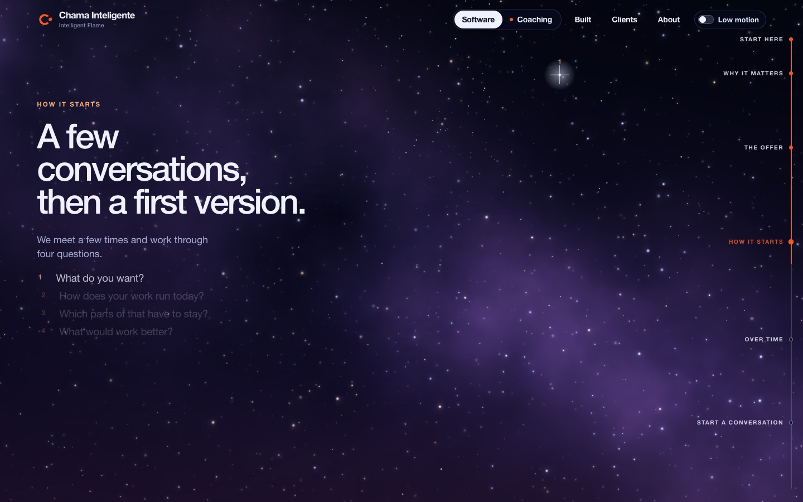
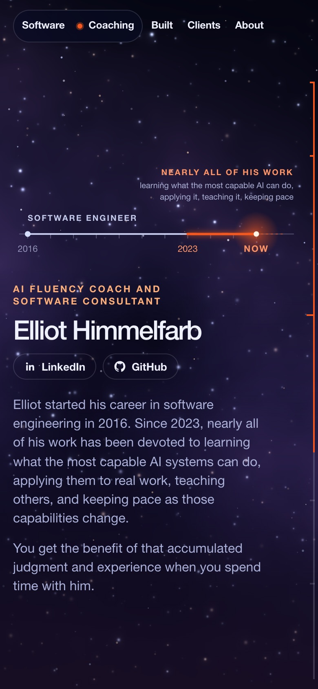

The dots on the right are now a rail. An ember line grows down it as you scroll, so the pause at the end of each section still shows progress, and every finished section stays lit.
Live on chamainteligente.comPR #190 merged762 tests pass
0scroll steps where the visible rail stood still, out of 1,200 sampled in production
18 / 18page and screen-size pairs pass in production: the fill reaches each dot exactly as its section takes over
2design reviews, before and after building. The second caught a blocker
Fill against scroll, measured on the live homepage
Each dot is a section becoming current. Between dots the line keeps climbing through the pauses that used to feel dead. Past the last dot the flame room takes the screen and the rail fades out, as the dots did before.
What it looks like

Desktop, hovering a dot: labels show, the current section is ember

Phone: a thin line with ticks, nothing to tap
What the design reviews changed
No pulse at each dotIt would fire on every pass, both ways. The dot turning ember is the marker.
Only the dots take clicksSpread down the full height, the hidden labels left invisible clickable strips over the page.
Dots at least 28px apartThe fill speeds up or slows between two dots so their labels never collide. It never stops.
Firmer empty trackThe old track colour nearly vanished on the light sections.
Phone line 4px in from the edgeClear of the browser's own scroll indicator. Hidden on /built, which has its own bar.
Found on the way: the labels' CSS rule also caught the fill and eased it, so it trailed the scroll by half a screen. Fixed before merge, and noted in the site skill.